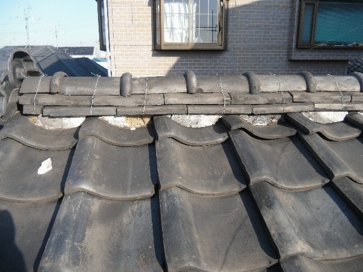
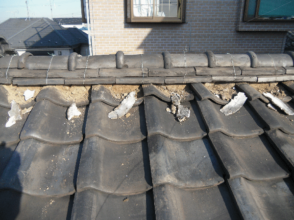

工事前の屋根の様子
この家は約30年間、屋根の修理を1回もしたことがないとの事で、お客様も屋根のことを非常に心配されておりました。
屋根に上がってみると、漆喰が所々はがれて、漆喰の内側に入っているのし土も流れ出ている状態でしたが、幸い瓦の割れもなく、雨漏りの形跡も見られませんでしたので、今回は漆喰工事のみの施工となりました。

既存の漆喰を撤去
まず既存の漆喰を撤去します。
撤去しないで、その上から新しい漆喰を仕上げていく業者もいますが、そうしますと逆に雨漏りすることがあります。棟部分の瓦（頂上部分の瓦）の下から2段目の瓦（のし瓦）より内側になるように漆喰を仕上げていかないと、逆に雨を招き入れる結果となってしまいます。
したがって、よっぽど内側に既存の漆喰がないかぎりは、新しい漆喰を分厚く仕上げるためにも撤去していきます。

工事後の屋根の様子
お客様にも喜んでいただけました。
屋根の場合、下から様子が見えるわけでもなく、紫外線や雨など常に厳しい条件にさらされている場所ですので、定期的に点検することをおすすめします。